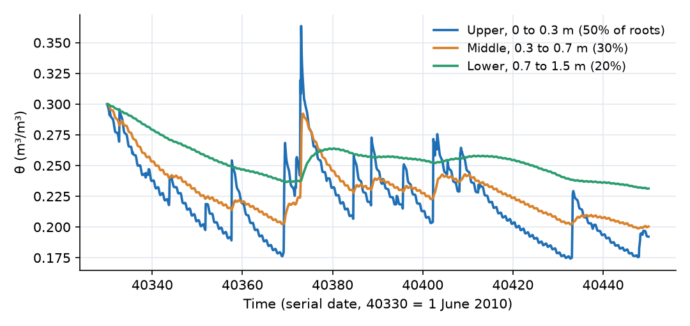
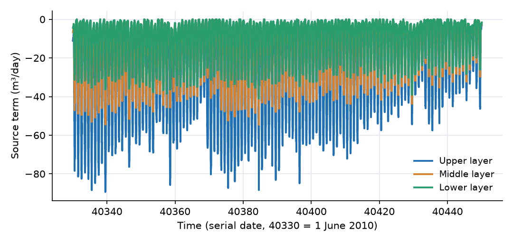
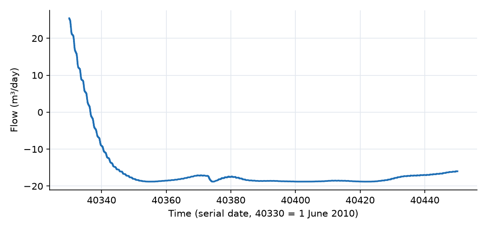

What this model represents
A field crop takes its water from the soil through roots that are not spread evenly with depth: most of the root mass is near the surface, and less is deeper down. When the topsoil dries, the plant can only keep transpiring if the deeper layers still hold water. This model represents a one-hectare field with a 1.5 m soil profile in three layers, a crop whose roots are divided 50%, 30% and 20% among them, and a water table below the profile. It is driven by four months of measured weather at Baltimore/Washington International Airport, Maryland (1 June to 29 September 2010): rainfall, solar radiation, air temperature, relative humidity and wind speed.
This is the simpler of the two plant water uptake formulations in OpenHydroQual (Model 1 in the technical guide linked above): a transpiration source attached to each soil layer. It is a good choice when the root distribution is known and fixed. For roots that grow, and for uptake that shifts towards wetter layers, see the Crop Growing Season example.
The download also contains rooted_soil_profile_synthetic.ohq, the same field driven by a synthetic ET0 time series and synthetic rain. It is useful for testing the soil and root parameters without the noise of real weather.
How it works
Transpiration from each layer. Each soil layer has its own transpiration source (plants.json), assigned to the layer's Evapotranspiration property. For layer i, with plan area A,
T_i = ET₀ · K_cb · K_s(θ_i) · f_i · A
where K_cb = 1.05 is the FAO-56 basal crop coefficient, f_i the root fraction of the layer (0.5, 0.3, 0.2; they must sum to one and nothing checks this), and K_s the water stress coefficient. In OpenHydroQual a source value is coefficient × time series × rate: here the coefficient is A·K_s, evaluated on the soil layer, and the rate is K_cb·f_i·(−ET₀), evaluated on the source. T_i is reported as the layer's Evapotranspiration term and is negative because it removes water.
Water stress. K_s is a linear ramp in effective saturation between the wilting point (150 m of suction) and field capacity (3.3 m of suction), using the layer's own van Genuchten parameters:
K_s = max(0, min((Sₑ − Sₑ(150)) / (Sₑ(3.3) − Sₑ(150)), 1)), with Sₑ(h) = (1 + (α·h)ⁿ)^(−m)
For this soil (α = 1.5 1/m, n = 1.4, θᵣ = 0.06, θₛ = 0.42) field capacity is θ = 0.244 and the wilting point is θ = 0.101. Above θ = 0.244 the layer transpires at its full share. Below it, uptake falls linearly to zero at θ = 0.101. Because each layer is stressed on its own, a dry layer's share is lost: the other layers do not make up for it.
Reference evapotranspiration. Each Transpiration_Penman (Soil) source computes ET₀ from the weather series with a Penman combination equation. As implemented in plants.json, with T in °C, RH as a fraction and u the wind speed:
e_s = 611 · exp(17.27·T / (237.3 + T)) (saturation vapour pressure, Pa) Δ = 4098 · e_s / (237.3 + T)² (slope of the saturation vapour pressure curve, Pa/K) λ = 2 501 000 − 2370·T (latent heat, J/kg) E_r = −s_R · R_s · 86400 / (1000 · λ) (radiation term, m/day) B = 0.000102 · s_u · u / (ln(z₂/z₀))² E_a = B · e_s · (RH − 1) (aerodynamic term) ET₀ = −(Δ·E_r + γ·E_a) / (Δ + γ)
with γ = 66.8 Pa/K, the wind measurement height z₂ = 10 m, the roughness length z₀ = 0.0003 m, the radiation scale factor s_R = 0.5 and the wind scale factor s_u = 0.447, which converts the recorded wind speed from mph to m/s. The radiation term uses incoming shortwave radiation; s_R = 0.5 stands in for the conversion to net radiation and is the intended calibration knob. The two terms are weighted by Δ/(Δ + γ) and γ/(Δ + γ): at 25 °C, Δ ≈ 189 Pa/K, so the radiation term carries about three quarters of the weight and the aerodynamic (humidity and wind) term about one quarter.
Soil water flow. The three layers are Soil blocks (unsaturated_soil.json) connected by Darcy-Buckingham links, with van Genuchten retention and Mualem-type conductivity (K_sat = 0.6 m/day). Head in each layer is H = z_bottom + d + ψ, the pressure head referred to the top of the layer. Flow between layers is Q = K_eff·(H_upper − H_lower)/L·A, with L the mean of the two thicknesses. The bottom layer exchanges water with the fixed water table through Q = K_eff·(H − H_wt)/(d/2)·A. Rain falls on Field_surface and infiltrates into the top layer through the surface-to-soil link. The 1D Infiltration and Soil Boundary Conditions example sets out these soil equations in full.
Initial state. All layers start at θ = 0.30, wetter than field capacity, so the crop is unstressed at first.
What to look for in the results
- Water balance over the season. Over 120 days the field receives 270 mm of rain. The crop transpires 587 mm (274 mm from the upper layer, 179 mm from the middle and 134 mm from the lower), about 4.9 mm/day. The difference is met by 190 mm of capillary rise from the water table and 127 mm drawn from soil storage. All of the rain infiltrates; ponding never exceeds 0.2 mm.
- The root-dense layer dries first. The upper layer drops below field capacity on 8 June, a week into the run, and reaches θ = 0.174 at its driest. It ends the season at θ = 0.192 (K_s = 0.63). The middle layer ends at θ = 0.200 (K_s = 0.69) and the lower layer at θ = 0.231 (K_s = 0.91). Each rain event rewets the upper layer briefly.
- Stress reduces transpiration as the season goes on. Daily transpiration is about 6.5 mm on 6 June, 6.3 mm on 1 July, 4.9 mm on 10 August and 2.9 mm on 19 September. Part of the decline is weather (shorter days), and part is soil stress.
- A diurnal cycle. Because most of ET₀ comes from the measured radiation, uptake peaks near midday (about 18 mm/day in early June, falling to about 9 mm/day by late September) and drops to a small, humidity- and wind-driven rate at night (typically below 1 mm/day). A single instantaneous value is therefore not a daily rate.
- Capillary support from below. After the wet initial profile has drained for a few days (2.5 mm/day downward at the start), the flow at the base reverses and the water table supplies about 1.9 mm/day for the rest of the summer.
- Synthetic variant. With 567 mm of synthetic ET₀ and 174 mm of rain,
rooted_soil_profile_synthetic.ohqtranspires 472 mm and ends at θ = 0.171, 0.191 and 0.220 (K_s = 0.49, 0.62 and 0.83). The pattern is the same: the layer with half of the roots is the most stressed.
Assumptions and limitations
- Transpiration only. Bare-soil evaporation is not included. K_cb is a basal coefficient, so a soil evaporation source can be added to the top layer without double counting. Do not attach a single-coefficient evapotranspiration source to a layer that already has a transpiration source.
- Fixed roots, no compensation. Root fractions are typed in and do not change. A dry layer's share of the demand is lost, so actual transpiration can fall well below potential even when deeper layers are wet. The full FAO-56 stress function, with its depletion fraction p, cannot be expressed in a source (it is equivalent to p = 0 here).
- The Penman ET₀ needs checking against site data. The radiation term uses incoming shortwave radiation scaled by 0.5, not a computed net radiation, and there is no soil heat flux term. The scale factor should be set from site data before the model is used quantitatively.
- Wind is measured at 10 m and used at that height through z₂ = 10 m in the wind function. No adjustment is made for the difference between the airport's grass surface and the crop.
- The weather is a single 2010 NOAA record from Baltimore/Washington International Airport (BWI), Maryland, used here as a representative humid-temperate summer.
- The 1 m between the base of the profile and the water table is not represented as soil. The link to the water table spans only half the bottom layer, which tends to overstate capillary rise.
- The soil is homogeneous, and the three layers have different thicknesses (0.3, 0.4 and 0.8 m). Because the soil plugin refers each layer's head to its top, the gravity component of the gradient between layers of unequal thickness is less than one (0.86 between the upper and middle layers, 0.67 between the middle and lower layers). Equal layer thicknesses avoid this.
Model diagram
Hover a block or link to see its name and type. Arrows show the positive flow direction.
Components
Click a component to see every property set in the model file, with units and meaning.
Blocks 5
Storage compartments: each holds water (and dissolved or particulate mass) and has a state that evolves in time.
Field_surfaceCatchmentThe 1 ha (10 000 m²) ground surface at 10 m elevation. Rain lands here and infiltrates into the top layer. It has no runoff outlet; the Manning coefficient is required by the block type but unused.
Catchment: Catchment
| Property | Value | Unit | Meaning |
|---|---|---|---|
| Manning's Roughness Coefficient | 0.15 | The Manning's roughness coefficient representing surface resistance to flow. Typical values vary by land cover type. | |
| Precipitation | Rain | m^3/day | A precipitation source object must be selected. |
| Catchment area | 10000 | m2 | Total horizontal surface area of the catchment. Used to compute initial storage and flow-related parameters. |
| Average water depth | 0 | m | The initial depth of the standing water before the simulation start time. Most of the times, this value is zero |
| Mean elevation of the catchment | 10 | m | The elevation of the centroid of the catchment based on the model datum. |
Root_zone_upperSoil · unsaturated_soilSoil layer from 0 to 0.3 m depth (elevation 9.7 to 10 m). Starts at θ = 0.30.
Soil: Variably Saturated Soil Block
| Property | Value | Unit | Meaning |
|---|---|---|---|
| Evapotranspiration | Crop_upper | m^3/day | Evapotranspiration |
| Saturated Hydraulic Conductivity | 0.6 | m/day | Saturated Hydraulc Conductivity |
| Van Genuchten's alpha parameter | 1.5 | 1/m | Van Genuchten's alpha parameter |
| Van Genuchten's n parameter | 1.4 | Van Genuchten's n parameter | |
| Residual Moisture Content | 0.06 | Residual Moisture Content | |
| Saturated Moisture Content | 0.42 | Saturated Moisture Content | |
| Specific storage | 0.01 | 1/m | Specific storage |
| Initial Moisture Content | 0.3 | Initial Moisture Content; Moisture Content | |
| Bottom Area of the soil block | 10000 | m2 | Bottom Area of the soil block |
| Bottom Elevation of the soil block | 9.7 | m | Bottom Elevation of the soil block |
| Depth of the soil block | 0.3 | m | Depth of the soil block |
Root_zone_middleSoil · unsaturated_soilSoil layer from 0.3 to 0.7 m depth. Same soil and initial moisture as the upper layer.
Soil: Variably Saturated Soil Block
| Property | Value | Unit | Meaning |
|---|---|---|---|
| Evapotranspiration | Crop_middle | m^3/day | Evapotranspiration |
| Saturated Hydraulic Conductivity | 0.6 | m/day | Saturated Hydraulc Conductivity |
| Van Genuchten's alpha parameter | 1.5 | 1/m | Van Genuchten's alpha parameter |
| Van Genuchten's n parameter | 1.4 | Van Genuchten's n parameter | |
| Residual Moisture Content | 0.06 | Residual Moisture Content | |
| Saturated Moisture Content | 0.42 | Saturated Moisture Content | |
| Specific storage | 0.01 | 1/m | Specific storage |
| Initial Moisture Content | 0.3 | Initial Moisture Content; Moisture Content | |
| Bottom Area of the soil block | 10000 | m2 | Bottom Area of the soil block |
| Bottom Elevation of the soil block | 9.3 | m | Bottom Elevation of the soil block |
| Depth of the soil block | 0.4 | m | Depth of the soil block |
Root_zone_lowerSoil · unsaturated_soilSoil layer from 0.7 to 1.5 m depth. Same soil and initial moisture.
Soil: Variably Saturated Soil Block
| Property | Value | Unit | Meaning |
|---|---|---|---|
| Evapotranspiration | Crop_lower | m^3/day | Evapotranspiration |
| Saturated Hydraulic Conductivity | 0.6 | m/day | Saturated Hydraulc Conductivity |
| Van Genuchten's alpha parameter | 1.5 | 1/m | Van Genuchten's alpha parameter |
| Van Genuchten's n parameter | 1.4 | Van Genuchten's n parameter | |
| Residual Moisture Content | 0.06 | Residual Moisture Content | |
| Saturated Moisture Content | 0.42 | Saturated Moisture Content | |
| Specific storage | 0.01 | 1/m | Specific storage |
| Initial Moisture Content | 0.3 | Initial Moisture Content; Moisture Content | |
| Bottom Area of the soil block | 10000 | m2 | Bottom Area of the soil block |
| Bottom Elevation of the soil block | 8.5 | m | Bottom Elevation of the soil block |
| Depth of the soil block | 0.8 | m | Depth of the soil block |
Water_tablefixed_headA fixed water table at 7.5 m elevation, 2.5 m below the ground surface and 1 m below the base of the profile.
fixed_head: Fixed-head boundary
| Property | Value | Unit | Meaning |
|---|---|---|---|
| Initial Storage | 100000 | m3 | |
| Head | 7.5 | m |
Links 4
Connections that move water (and the mass it carries) between blocks.
Infiltrationsurfacewater_to_soil_link · unsaturated_soilMoves water from Field_surface into Root_zone_upper. Positive downward.
surfacewater_to_soil_link: Surfacewater to soil connector
Percolation_uppersoil_to_soil_link · unsaturated_soilFlow between the upper and middle layers. Positive downward, negative for upward (capillary) flow.
soil_to_soil_link: Vertical soil to soil connector
Percolation_lowersoil_to_soil_link · unsaturated_soilFlow between the middle and lower layers. Positive downward.
soil_to_soil_link: Vertical soil to soil connector
Deep_drainagesoil_to_fixedhead_link · unsaturated_soilExchange between the bottom layer and the water table. Positive downward (drainage); negative means the water table is supplying the profile by capillary rise.
soil_to_fixedhead_link: Soil to fixed head connector
Sources 4
External inputs or sinks applied to blocks: rainfall, evaporation, loads, exchange with the atmosphere.
RainPrecipitationMeasured rainfall for 2010 from rainfall_2010.txt, 270 mm between 1 June and 29 September.
rainfall_2010.txt, 270 mm between 1 June and 29 September.Precipitation: Precipitation
| Property | Value | Unit | Meaning |
|---|---|---|---|
| Precipitation Cumulative | rainfall_2010.txt | m |
Crop_upperTranspiration_Penman (Soil) · plantsTranspiration source attached to Root_zone_upper. Penman ET0 from the four weather files, basal crop coefficient Kcb = 1.05, and root fraction 0.5: half of the crop's water comes from this layer when it is unstressed.
Transpiration_Penman (Soil): Plant transpiration from a soil layer: T = ET0 * Kcb * Ks * root_fraction, with the reference evapotranspiration computed internally from solar radiation, air temperature, relative humidity and wind speed by the Penman combination equation. Water stress reduces transpiration linearly from 1 at field capacity (3.3 m suction) to 0 at wilting point (150 m suction), both evaluated from the layer's own van Genuchten retention curve. Note this is a LINEAR stress function, not the FAO-56 Ks, which stays at 1 until the readily available water is depleted and only then declines; this component therefore transpires somewhat less under mild depletion. TRANSPIRATION ONLY - soil evaporation must be supplied separately by an Evapotranspiration_*(Soil) source. Do not also attach a single-Kc evapotranspiration source to the same layer, or the loss will be counted twice.
| Property | Value | Unit | Meaning |
|---|---|---|---|
| Basal crop coefficient (transpiration only) | 1.05 | FAO-56 basal crop coefficient Kcb, which covers transpiration only. Soil evaporation is NOT included and must be supplied separately by an Evapotranspiration_*(Soil) source; see the plugin documentation. | |
| Relative humidity (0-1) | humidity_2010.csv | ||
| Air temperature | temperature_2010.csv | degreeC | |
| Psychrometric constant | 66.8 | ||
| Fraction of the root system in this layer | 0.5 | Share of total transpiration drawn from the layer this source is attached to. Attach the same source to several layers with fractions summing to one, or use separate sources per layer. | |
| Solar radiation | solar_radiation_2010.csv | W/m^2 | |
| Solar scale factor | 0.5 | ||
| Wind scale factor | 0.447 | ||
| Wind speed | wind_speed_2010.csv | m/s | |
| Roughness height | 0.0003 | m | |
| Wind measurement height | 10 | m |
Crop_middleTranspiration_Penman (Soil) · plantsTranspiration source attached to Root_zone_middle, identical to Crop_upper except for its root fraction of 0.3.
Transpiration_Penman (Soil): Plant transpiration from a soil layer: T = ET0 * Kcb * Ks * root_fraction, with the reference evapotranspiration computed internally from solar radiation, air temperature, relative humidity and wind speed by the Penman combination equation. Water stress reduces transpiration linearly from 1 at field capacity (3.3 m suction) to 0 at wilting point (150 m suction), both evaluated from the layer's own van Genuchten retention curve. Note this is a LINEAR stress function, not the FAO-56 Ks, which stays at 1 until the readily available water is depleted and only then declines; this component therefore transpires somewhat less under mild depletion. TRANSPIRATION ONLY - soil evaporation must be supplied separately by an Evapotranspiration_*(Soil) source. Do not also attach a single-Kc evapotranspiration source to the same layer, or the loss will be counted twice.
| Property | Value | Unit | Meaning |
|---|---|---|---|
| Basal crop coefficient (transpiration only) | 1.05 | FAO-56 basal crop coefficient Kcb, which covers transpiration only. Soil evaporation is NOT included and must be supplied separately by an Evapotranspiration_*(Soil) source; see the plugin documentation. | |
| Relative humidity (0-1) | humidity_2010.csv | ||
| Air temperature | temperature_2010.csv | degreeC | |
| Psychrometric constant | 66.8 | ||
| Fraction of the root system in this layer | 0.3 | Share of total transpiration drawn from the layer this source is attached to. Attach the same source to several layers with fractions summing to one, or use separate sources per layer. | |
| Solar radiation | solar_radiation_2010.csv | W/m^2 | |
| Solar scale factor | 0.5 | ||
| Wind scale factor | 0.447 | ||
| Wind speed | wind_speed_2010.csv | m/s | |
| Roughness height | 0.0003 | m | |
| Wind measurement height | 10 | m |
Crop_lowerTranspiration_Penman (Soil) · plantsTranspiration source attached to Root_zone_lower, with root fraction 0.2.
Transpiration_Penman (Soil): Plant transpiration from a soil layer: T = ET0 * Kcb * Ks * root_fraction, with the reference evapotranspiration computed internally from solar radiation, air temperature, relative humidity and wind speed by the Penman combination equation. Water stress reduces transpiration linearly from 1 at field capacity (3.3 m suction) to 0 at wilting point (150 m suction), both evaluated from the layer's own van Genuchten retention curve. Note this is a LINEAR stress function, not the FAO-56 Ks, which stays at 1 until the readily available water is depleted and only then declines; this component therefore transpires somewhat less under mild depletion. TRANSPIRATION ONLY - soil evaporation must be supplied separately by an Evapotranspiration_*(Soil) source. Do not also attach a single-Kc evapotranspiration source to the same layer, or the loss will be counted twice.
| Property | Value | Unit | Meaning |
|---|---|---|---|
| Basal crop coefficient (transpiration only) | 1.05 | FAO-56 basal crop coefficient Kcb, which covers transpiration only. Soil evaporation is NOT included and must be supplied separately by an Evapotranspiration_*(Soil) source; see the plugin documentation. | |
| Relative humidity (0-1) | humidity_2010.csv | ||
| Air temperature | temperature_2010.csv | degreeC | |
| Psychrometric constant | 66.8 | ||
| Fraction of the root system in this layer | 0.2 | Share of total transpiration drawn from the layer this source is attached to. Attach the same source to several layers with fractions summing to one, or use separate sources per layer. | |
| Solar radiation | solar_radiation_2010.csv | W/m^2 | |
| Solar scale factor | 0.5 | ||
| Wind scale factor | 0.447 | ||
| Wind speed | wind_speed_2010.csv | m/s | |
| Roughness height | 0.0003 | m | |
| Wind measurement height | 10 | m |
Input files
rainfall_2010.txt | Measured rainfall for 2010 in the precipitation format: interval start (day), interval end (day), depth (m) in the interval. Times are spreadsheet serial dates (40179 = 1 January 2010). NOAA observations from Baltimore/Washington International Airport (BWI), Maryland, USA (public domain). |
humidity_2010.csv | Measured relative humidity as a fraction (0 to 1) versus time (serial date), half-hourly. NOAA observations from Baltimore/Washington International Airport (BWI), Maryland, USA (public domain). |
temperature_2010.csv | Measured air temperature (°C) versus time (serial date), half-hourly. Mean 26.1 °C over the simulated window. NOAA observations from Baltimore/Washington International Airport (BWI), Maryland, USA (public domain). |
solar_radiation_2010.csv | Measured incoming shortwave radiation (W/m²) versus time (serial date), half-hourly through 2010. NOAA observations from Baltimore/Washington International Airport (BWI), Maryland, USA (public domain). |
wind_speed_2010.csv | Wind speed (mph) versus time (serial date), from NOAA NCDC Local Climatological Data for Baltimore/Washington International Airport (BWI), Maryland, USA (public domain): hourly observations by the ASOS anemometer at 10 m height. The model converts mph to m/s with the scale factor 0.447 and sets the measurement height z₂ to 10 m. |
rooted_soil_profile_synthetic.ohq | The same field and soil profile with ET0 read from a time series ( |
et0_synthetic.csv | Synthetic daily reference evapotranspiration (m/day) versus time (day) for the synthetic variant, 2.5 to 6.0 mm/day, 567 mm in total. |
rainfall_synthetic.txt | Synthetic hourly rainfall for the synthetic variant, in the precipitation format, 174 mm in seven events. |
Simulation settings
| Start time | 40330 |
| End time | 40450 |
| Initial time step | 0.001 |
| Write interval (steps) | 50 |
| Newton-Raphson tolerance | 1e-06 |
Results
Produced by running the downloaded model unchanged.


